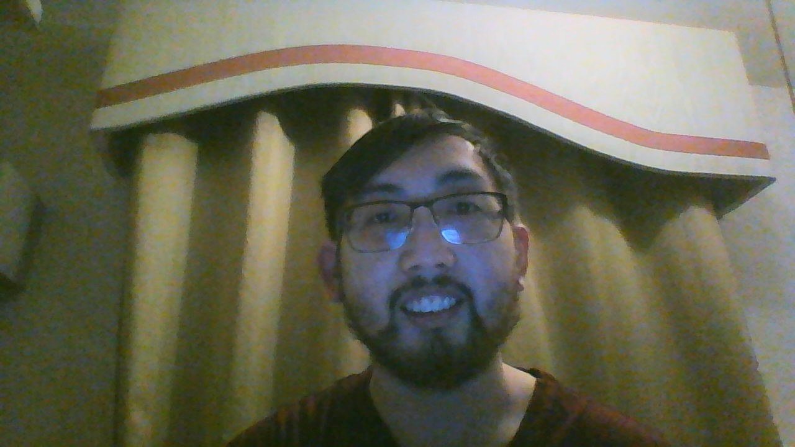

Christopher Ling

Front-end Support
I'm part of the CSC-648 section 01 team 02 web development collaboration that is building an app to promote healthy habits.
- Birthday: 26 September 1992
- Place: California
- City: Oakland
- Age: 29
- Degree Pursuing: Bachelor
- Email: cling1@mail.sfsu.edu
I've been in and out of Commuunity College from College of San Mateo, Kinata, and Skyline before transfering to
SFSU in Fall 2018.
This semester fulfils my last core CSC requirements; if everything goes well,
I just need to finish my senior presentation and complete 4 more CSC upper-division
Electives to finish my BS in Computer Science.
I wouldn't say I'm strong in web development, but I hope to learn and refresh myself on these
methods and technology along with my Team.